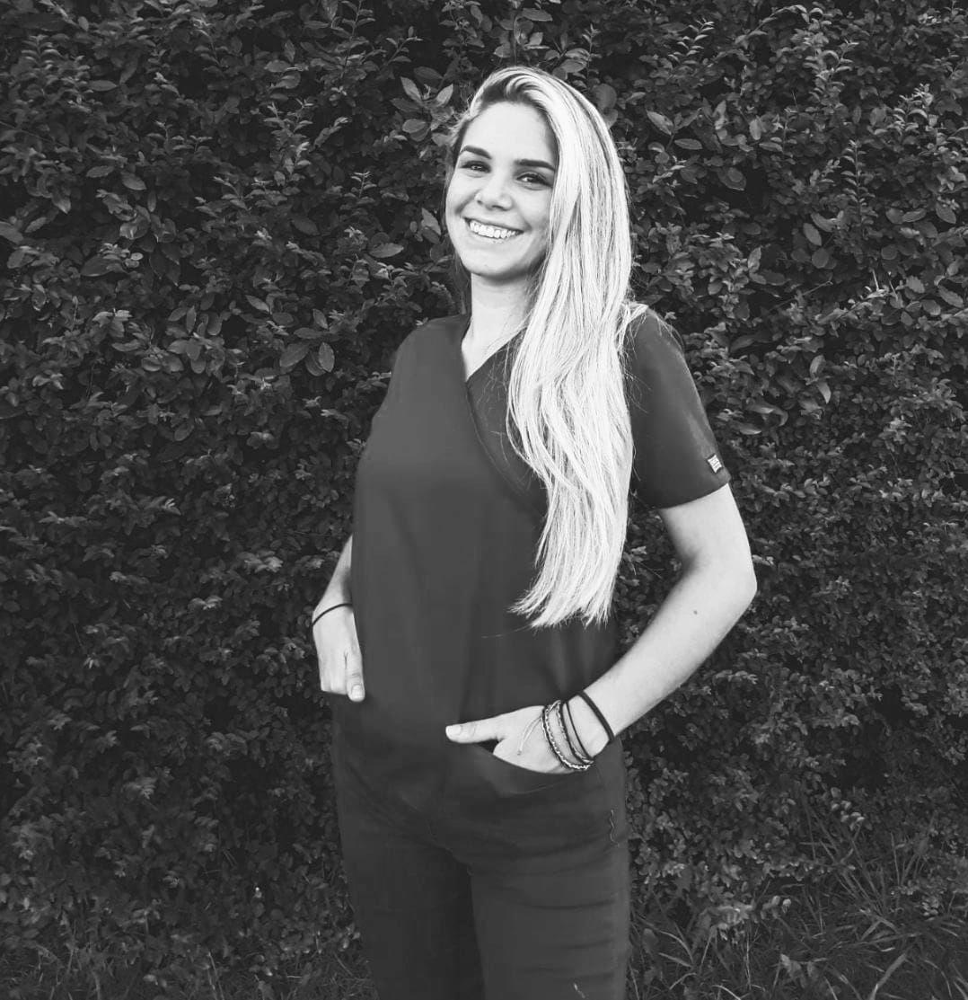
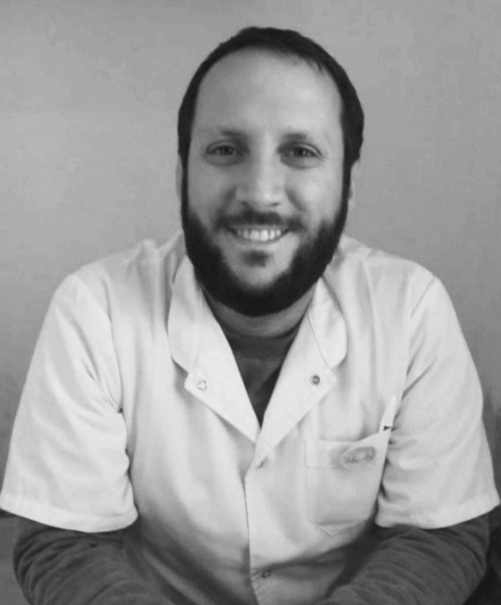
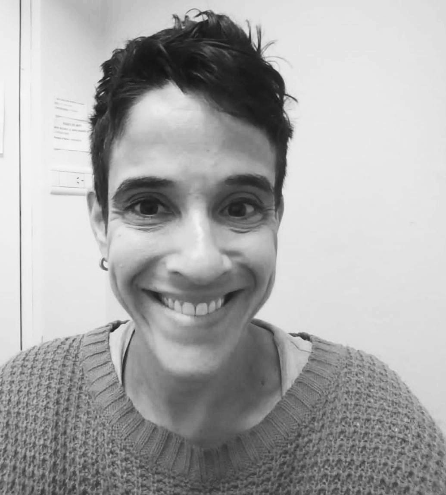
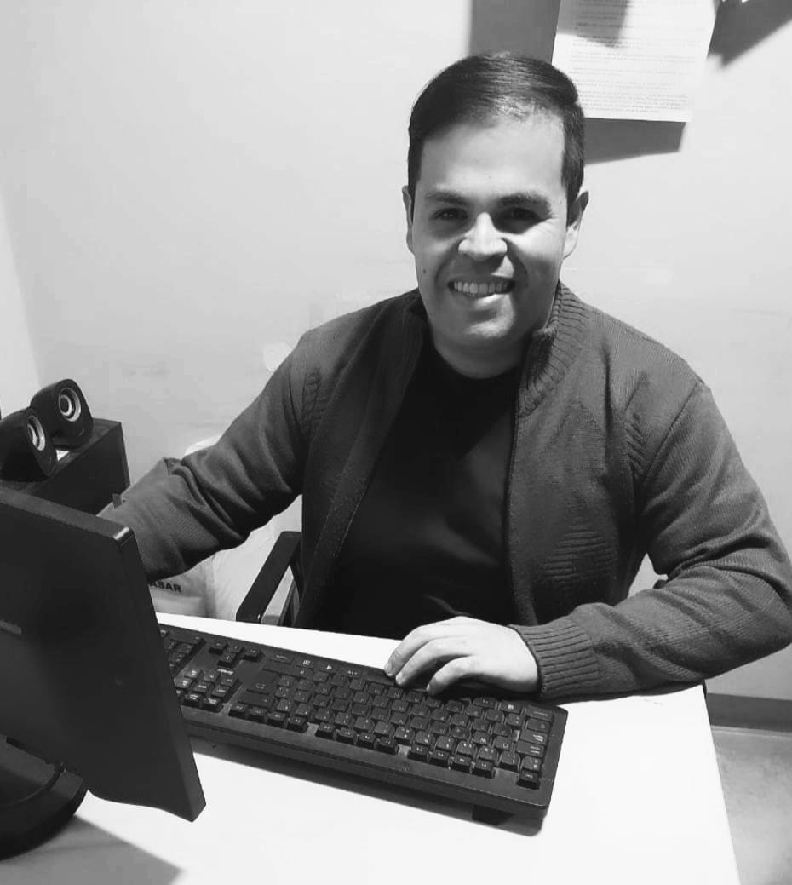
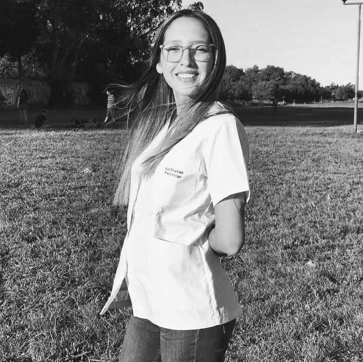
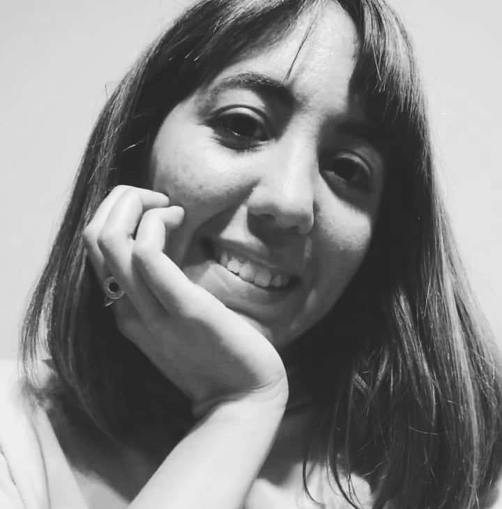
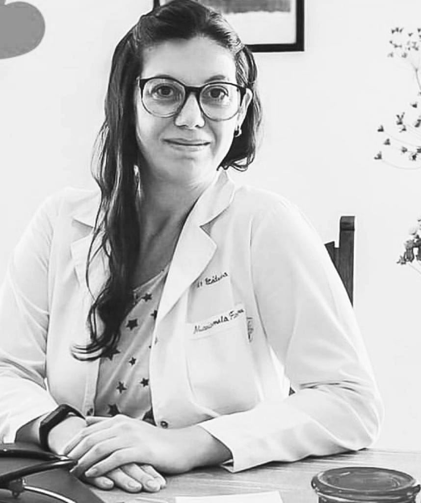
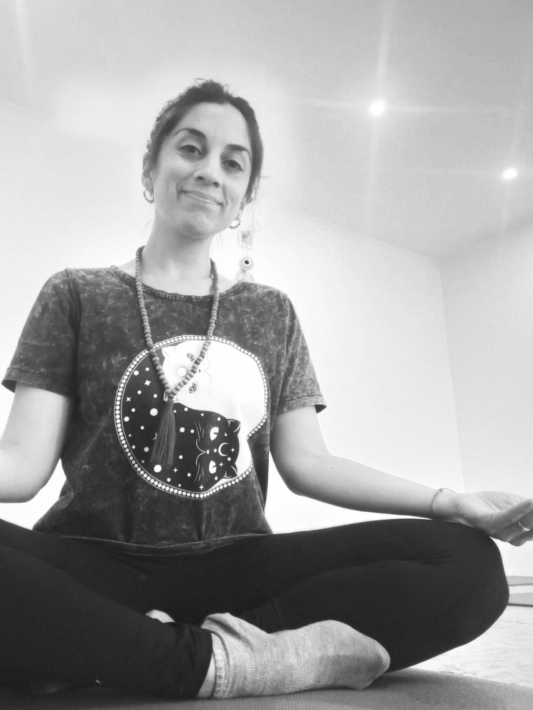
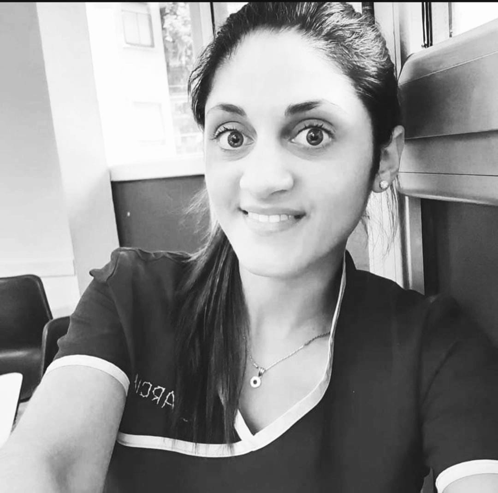
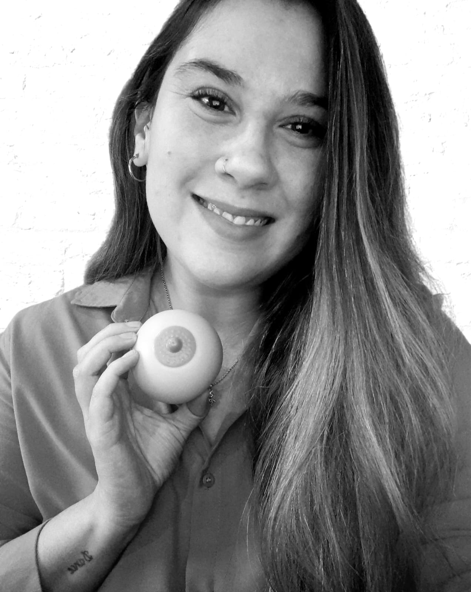

Anahí Etcheverry
Asesora en lactancia - Doula
- Soy Anahi Etcheverry .Vivo en la ciudad de Gualeguaychu, Entre Rios.
Comencé a formarme como Asesora desde el nacimiento de mi hijo , que despertó en mí el amor por acompañar Lactancias.
- Soy Asesora en Lactancia, Doula y Acompañante en duelo gestacional y perinatal.
Actualmente trabajo en un centro de Salud de mi ciudad. También lo hago de forma particular, brindando consultas y talleres para embarazadas y familias
Me encanta aprender y seguir sumando conocimientos para enriquecer mi trabajo, tales como masterclass en Lactancia Materna, entre otros.
¿Por qué pedirías una cita online conmigo?
Amo mi trabajo, me apasiona acompañar a la mujer y la familia en esta etapa movilizadora y transformadora de la vida.
Preparo y asisto a la Mama, desde el embarazo, para que pueda sostener y alimentar a su hijo sin miedo ni frustraciones.
Me encantaría conocerte! Te espero para una consulta virtual o presencial.

Gabriela Parra
Nutricionista
- Soy Gabriela Parra, Licenciada en Nutrición y Dietética, egresada de la Universidad Central de Venezuela, y vivo en Buenos Aires, Argentina.
- Cuento con 10 años de experiencia, en los ámbitos de Docencia, Gastronomía y Clínica, en esta última con un manejo nutricional de adultos, embarazadas, niños y adultos mayores.
- Además, estoy certificada en Alimentación Basada en Plantas.
- Colaboro como voluntaria en la Coordinación de Comunicación y Redes Sociales, de la Asociación de Nutricionistas Venezolanos en Argentina.
- Y me apasiona el diseño, así que ese lado creativo lo uso para generar contenido y planes de alimentación que sean atractivos y prácticos.
¿Por qué pedirías una cita online conmigo?
Porque puedo acompañarte en el trayecto de formar nuevos hábitos que mejoren tu salud, aprenderás a comer, a planificarte en la cocina, a tener una linda relación con la comida y a respetar tu
cuerpo en el proceso, siempre orientado a tus objetivos y con la idea de que tu bienestar sea duradero.

Lucas Shapiro
Asesor en lactancia - Doula
- Me llamo Lucas Shapiro, de Gualeguaychú Entre Ríos, Argentina.
- Soy asesor en Lactancia, doula, acompañante en duelo gestacional y perinatal. Futuro puericultor.
- Tambien relicé Master Class con distintos enfoques profesionales de la salud, con todo lo relacionado con la lactancia materna.
- Estoy haciendo Asesorías y consejerías de Lactancia en un Atención primaria de la salud (CAPS) Como también lo hago particular de forma Presencial y Virtual, brindando diferentes consultas y talleres para embarazadas y familias.
¿Por qué pedirías una cita online conmigo?
Acompaño y apoyo a las mujeres en el camino de la Lactancia, desde la gestación, hasta los primeros años de vida de sus hijos: brindando SIEMPRE información, apoyo, sostén
y asistencia en cada una de estas etapas, con empatía, sin juicios, brindando información actualizada en base de evidencia científica.

Guillermina de Jonge
Psicóloga
- Mi nombre es Guillermina de Jonge. Soy licenciada en psicología, egresada de la Universidad Abierta Interamericana (UAI).
- Actualmente trabajo en el área clínica con niños, adolescentes y adultos.
- También tengo experiencia en discapacidad y psiquiatría, entre otras ramas de la profesión.
¿Por qué pedirías una cita online conmigo?
Creo en la psicología como una herramienta fundamental para el autoconocimiento y la
superación personal, desde un espacio de intercambio de historias y saberes propios y ajenos. Es por eso, que te invito a participar de esta propuesta.
Victoria Bartolini
Psicóloga
- Soy Victoria Bartolini, Lic. En psicología, recibida de la Universidad del Salvador, y residenciada en provincia de Buenos Aires, Zona Sur.
- Desde mis comienzos, he realizado formaciones en Psicodrama, Técnicas Teatrales como herramienta terapéutica, Mindfulness, Trastornos Psicosomaticos, Autolesiones, Orientación Vocacional y en Trastornos del espectro Autista, entre otros. Asi mismo, actualmente, continuo mi formacion, realizando un posgrado en Psicoterapias Cognitivas y Contemporaneas.
- Durante varios años, he tenido experiencia en el Área de discapacidad, realizando tareas de acompañamiento, asistencia, apoyo y orientación de jóvenes y adultos.
- Actualmente me dedico a la atención clínica de Adolescentes y Adultos en consultorio presencial y de manera virtual. Y a la atención de niños con trastornos del neurodesarrollo, de manera presencial.
¿Por qué pedirías una cita online conmigo?
Porque te propongo la creación de un espacio propio y personal, para que puedas conocerte, reinventarte, y sortear aquellas situaciones que te obstaculizan en el camino de llegar a tu versión más auténtica. Y todo esto, desde un enfoque que se ajuste a tus necesidades y deseos, siendo vos el protagonista de tu propio cambio.
Te propongo un espacio basado en el respeto mutuo, donde ambos colaboramos y construimos, activamente, el proceso de cambio que buscas, para arribar a tus metas y objetivos personales.
Te propongo un espacio donde vos sos autor y protagonista.

Cesar Cabrera
Psicólogo
- Hola, mi nombre es César Cabrera, nací en la ciudad Ezeiza, zona sur de la provincia de Buenos Aires.
- La psicología ha ocupado un lugar esencial en mi vida, por lo que decidí convertirme en Licenciado en Psicología.
- Actualmente me encuentro trabajando en el Área Técnica y Profesional del Hospital Penitenciario Central del Complejo Penitenciario Federal 1. También atiendo de forma online.
- Considero que la salud mental ocupa un lugar esencial en la vida de las personas, ya que su presencia nos brinda las herramientas para poder desenvolvernos en la sociedad y hacer frente a las exigencias de la vida diaria.
¿Por qué pedirías una cita online conmigo?
Apasionado por mi trabajo y poder orientar a las personas. Destaco la importancia de procurar el bienestar psicológico, emocional y social de las personas. Atención orientada a población adulta. Me encantaría conocerte!!

Rosario Rostan
Psicóloga
- Hola! Mi nombre es Rosario Rostan, soy Licenciada en Psicología, recibida en la Universidad de Buenos Aires.
- Hice mis practicas como estudiante, en el Hospital Estévez, ubicado en la zona sur de la provincia de Buenos Aires, estoy recibida de Acompañante Terapeutico y fui coordinadora de sala en un Centro Educativo Terapeutico, durante 3 años, donde trabaje con niños y adolescentes, con diferentes tipos de discapacidades.
- Actualmente, mi trabajo lo realizo desde el consultorio virtual, haciendo lo que los psicólogos llamaríamos "clinica". En este espacio de acompañamiento, atiendo adolescentes y adultos.
- En lo que respecta a mi formación, me encuentro realizando un curso de actualización en la UBA, terminando de cursar las últimas materias del Profesorado en Psicología, de la UBA y realizando un diplomado en Trastornos de la Conducta Alimentaria.
¿Por qué pedirías una cita online conmigo?
En lo personal me gusta pensar el consultorio, como un cuarto vacio, que uno viene a llenar con lo que quiera. Sabiendo que los espacios terapeuticos, son personales y subjetivos... A veces llevaremos alegrías, dolores, pesares y otras tantas, seguro muchas, intentaremos pensar en la solución, en las posiciones y en la transformación.
Te invito a recorrer, un camino de autoconocimiento y de aceptación, pudiendo empezar a tomar buenas decisiones, para ser asertivos con nuestra mente y cuerpo. Aprendiendo a conocer nuestras emociones, nuestros síntomas y nuestros pensamientos.

Brenda Rossi
Psicopedagoga
- Mi nombre es Brenda Rossi, soy Psicopedagoga y Psicóloga Social.
- Mi práctica profesional la desempeño en el ámbito clínico y distintos campos de acción. Realizando orientación vocacional, técnicas de estudio, apoyo escolar, orientación a familias y docentes, coordinación de grupos. Cuya atención siempre estuvo orientada a niños, adolescentes y jóvenes.
- Entiendo la práctica de mi profesión como un espacio de aprendizaje, desafíos, interrogantes y de encuentros con otros, quienes están atravesados por múltiples factores que se ponen en relevancia al momento de aprender. La cual se da en el marco de la interdisciplinariedad y utilizando el juego como herramienta principal en el tratamiento psicopedagógico.
¿Por qué pedirías una cita online conmigo?
Mi propuesta es acompañar los procesos de aprendizaje, mediante encuentros individuales o grupales y talleres que generen herramientas para un trabajo en conjunto. Los espacios están pensados de manera innovadora, dónde se invita a jugar y crear, siendo la persona consultante parte activa de ese proceso.

Marianela Fontana
Médica
- Soy médica recibida de la UBA en el año 2015
- Cuento con un posgrado bianual de Formación Especializada en Ecografía General y Ultrasonografía.
- Hice un curso de Neurosonografía Embrio-Fetal.
- También hice un posgrado en Nutrición Clínica avalado por el Colegio de Nutricionistas de la Provincia de Buenos Aires.
- Soy socia de la SAEU (Sociedad Argentina de Ecografía y Ultrasonografía).
¿Por qué pedirías una cita online conmigo?
Porque brindo una atención integral, que me permite abordar cada situación personal de manera individual.
Te propongo una entrevista inicial, dónde pueda conocerte y armar un plan de alimentación especial para vos.
Y por sobretodo, que sea posible de cumplir, según tus posibilidades y gustos a la hora de alimentarte, que puedas disfrutar de una nueva forma de comer, que va a cambiar tu vida. Te voy a acompañar en ese aprendizaje, dándote los mejores consejos y recetas, realizando un seguimiento y abordando tus inquietudes.
Te propongo un espacio dónde vas a cambiar tu forma de alimentarte y tener una mejor calidad de vida.

Romina Walpert
Profe de Yoga
- Me llamo Romina Walpert, tengo 38 años y vivo en Ezeiza.
- Soy docente de Artística en el área de danzas, trabajo en escuelas hace mas de 15 años en nivel inicial, primario y secundario.
- Siempre he practicado Yoga, pero durante la pandemia sentí la necesidad de instruirme cómo formadora y extender está práctica tan sanadora.
- En la actualidad brindo clases de Yoga para el público en general, embarazadas y niños.
¿Por qué pedirías una cita online conmigo?
El Yoga es una disciplina integral que trabaja cuerpo, mente y espíritu.
Brinda técnicas para aprender a respirar de forma consciente lo cual ayuda a atravesar momentos de ansiedad y estrés.
Aporta flexibilidad y bienestar físico de manera amable, haciendo conscientes las necesidades del cuerpo físico.
En el caso de la mujer gestante, además de todo lo anterior ayuda a conectar con el bebé y el propio cuerpo, fomentando la paciencia y el amor propio.

Débora Ayelén Berganza
Profe de Yoga
- Soy Debi, nací en Lomas del Mirador, zona oeste, Buenos Aires.
- Tengo 32 años y soy ayudadora profesional, estudié y me recibí de Criminóloga, Psicologa Social, Profesora de Yôga Integral; especializándome en todas las etapas de la vida, desde el nacimiento hasta la vejez.
- Brindo clases de Yôga porque al experimentar esta ciencia, conocer su filosofía y disfrutar de su arte pude comprobar su beneficio y eficacia para que llegue al que lo requiera.
¿Por qué pedirías una cita online conmigo?
Porque el Yôga está abierto a cualquier persona que quiera sentirse mejor, porque movemos el cuerpo y la mente, porque te da herramientas para la vida cotidiana para vivir en armonía, entonces, el resultado es mágico.
Es momento de pensar en vos y el camino es el Yôga. Namaskar! Te saludo con el alma.

Anabella García
Instrumentadora quirúrgica - Extraccionista - Asesora en lactancia
- Soy Ana, nací en Villa luzuriaga, zona oeste, Buenos Aires.
- Tengo 28 años y soy profesional de la salud con mas de 7 años en el laboratorio del hospital militar.
- Estudié y me recibí de Instrumentadora Quirúrgica en facultad de medicina Barceló, extraccionista en la Uba y Asesora en lactancia en espacio inalbis ( hospital de san isidro) ; me sigo especializando en alimentación infantil saludable.
¿Por qué pedirías una cita online conmigo?
Mi objetivo es brindar acompañamiento, asesoramiento y consejería profesional a las madres y padres que atraviesan esta etapa maravillosa de la vida, desde el embarazo hasta su destete.
Quiero ayudar a que ninguna madre que desee dar el pecho se quede sin hacerlo, gestionando el manejo clínico, desarrollando técnicas de escucha y contención activa. Realizo consultas de manera online, presencial Ramos y Villa luzuriaga o domicilio.

Rocío Zaracho
Puericultora
- Soy Rocío Zaracho, Puericultora egresada de la ACADP.
- Soy socia de la Unión de Puericultoras Argentinas.
- Mamá de dos niños y gracias a ellos decidí formarme como profesional en lactancia y crianza.
¿Por qué pedirías una cita online conmigo?
Considero que todas las familias que se embarcan en la mapaternidad deben contar con el apoyo de distintos profesionales idóneos.
Mi labor como puericultora es acompañarlos desde la gestación hasta la primera infancia. Informando y sosteniendo más que nada a las mujeres que atravesamos momentos tan bisagras como es parir y amamantar, desde el amor y el compromiso que le tengo a esta profesión.